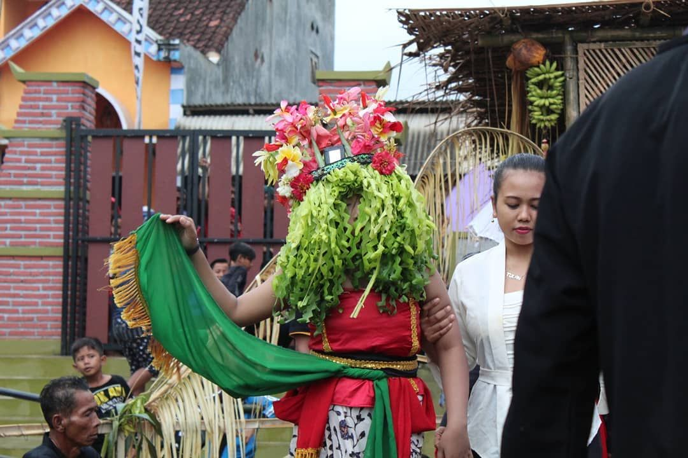

1. Ritual Tolak Bala
Seblang Olehsari adalah ritual adat suku Osing yang diadakan setiap awal bulan Syawal. Tarian ini bukan sekadar hiburan, melainkan ritual tolak bala untuk menjaga keselamatan desa. Penari akan menari selama 7 hari berturut-turut dalam keadaan trance atau tidak sadar setelah dibacakan mantra oleh dukun setempat.

2. Warisan Garis Keturunan
Tidak sembarang orang bisa menjadi penari Seblang. Penarinya haruslah seorang gadis muda yang masih memiliki garis keturunan dengan penari Seblang sebelumnya. Ciri khas utamanya adalah penggunaan Omprok (mahkota) yang terbuat dari daun pisang muda dan dihiasi berbagai bunga segar yang menutupi sebagian wajah penari.
Tahukah Kamu?
Bunga-bunga yang ada di mahkota penari Seblang biasanya akan diperebutkan oleh penonton di akhir acara karena dipercayai bisa membawa keberuntungan atau dijadikan sebagai penglaris.